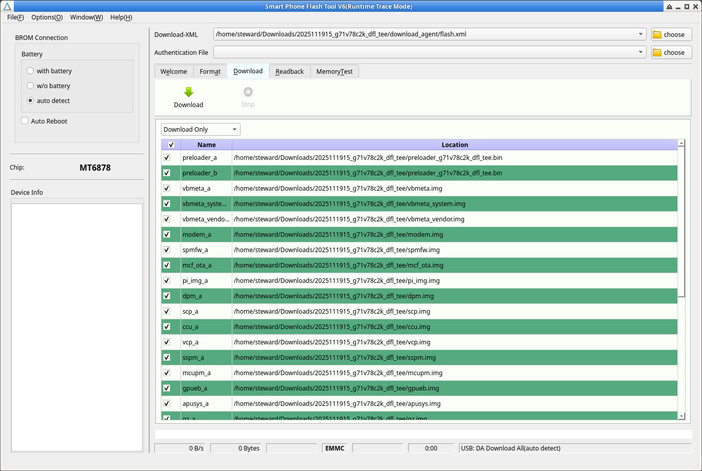
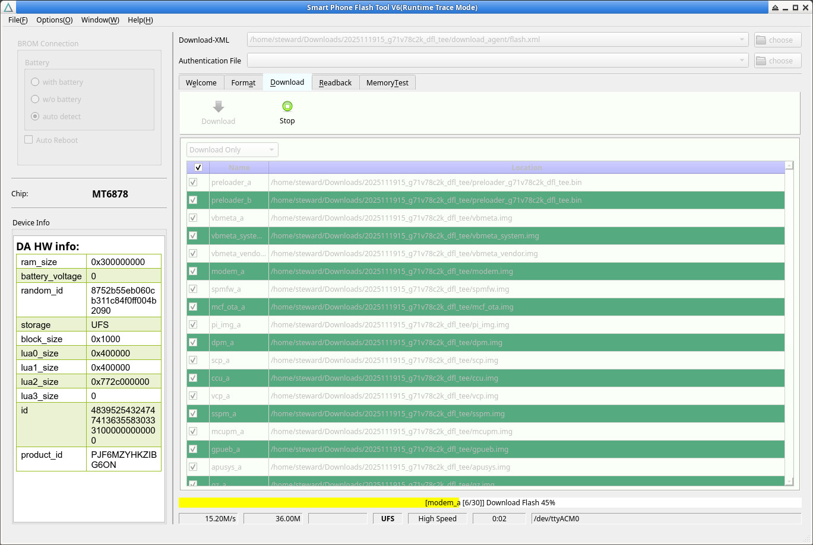

參考資訊：
https://spflashtools.com/linux/sp-flash-tool-v6-2228-for-linux
https://drive.google.com/drive/folders/1LYmZyadDAAZISZgllurBjqSs-fNVnEf9
步驟如下：
1. 下載2025111915_g71v78c2k_dfl_tee.zip
2. 執行如下命令
$ cd $ wget https://github.com/steward-fu/website/releases/download/titan2/SP_Flash_Tool_v6.2228_Linux.zip $ unzip SP_Flash_Tool_v6.2228_Linux.zip $ cd SP_Flash_Tool_v6.2228_Linux $ sh SPFlashToolV6.sh
3. Download-XML選擇download_agent/flash.xml
4. 選擇Download Only

